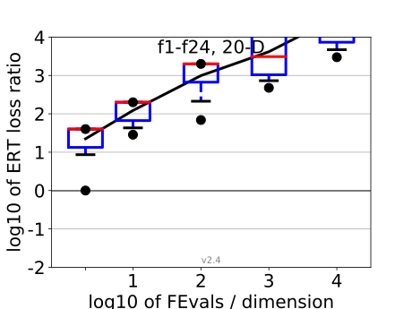
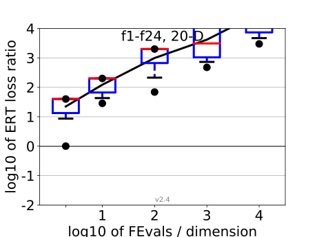

All functions in 5-D and 20-D
f1–f24 in 5-D, maxFE/D=12404
| #FEs/D | best | 10 % | 25 % | med | 75 % | 90 % |
|---|---|---|---|---|---|---|
| RLUS/D | 1e2 | 1e2 | 1e2 | 1e2 | 1e2 | 1e2 |
| 2 | 0.93 | 1.4 | 1.9 | 3.3 | 8.7 | 10 |
| 10 | 5.0 | 7.1 | 10 | 12 | 33 | 50 |
| 100 | 16 | 24 | 33 | 44 | 62 | 1.6e2 |
| 1e3 | 88 | 1.2e2 | 2.0e2 | 2.7e2 | 4.0e2 | 1.1e3 |
| 1e4 | 4.2e2 | 8.4e2 | 1.6e3 | 2.4e3 | 3.3e3 | 9.5e3 |
f1–f24 in 20-D, maxFE/D=322279
| #FEs/D | best | 10 % | 25 % | med | 75 % | 90 % |
|---|---|---|---|---|---|---|
| RLUS/D | 1e2 | 1e2 | 1e2 | 1e2 | 1e2 | 1e2 |
| 2 | 1.0 | 7.8 | 13 | 40 | 40 | 40 |
| 10 | 29 | 39 | 67 | 2.0e2 | 2.0e2 | 2.0e2 |
| 100 | 69 | 1.8e2 | 6.7e2 | 2.0e3 | 2.0e3 | 2.0e3 |
| 1e3 | 4.8e2 | 7.1e2 | 1.0e3 | 3.1e3 | 2.0e4 | 2.0e4 |
| 1e4 | 3.0e3 | 4.7e3 | 7.3e3 | 2.3e4 | 2.0e5 | 2.0e5 |
| 1e5 | 3.0e4 | 4.7e4 | 7.3e4 | 2.3e5 | 2.0e6 | 2.0e6 |
Separable functions in 5-D and 20-D
Misc. moderate functions in 5-D and 20-D
Ill-conditioned functions in 5-D and 20-D
Multi-modal functions in 5-D and 20-D
Weak structure functions in 5-D and 20-D
ERT loss ratios (see the previous figure for details). Each cross (+) represents a single function, the line is the geometric mean.{kind=link}
{kind=link}
{kind=link}
{kind=link}
{kind=link}
{kind=link}
{kind=link}
{kind=link}
{kind=link}
{kind=link}
{kind=link}